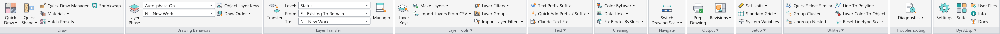
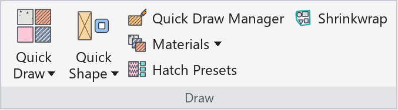
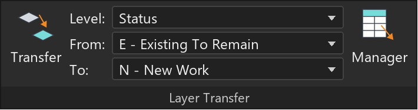
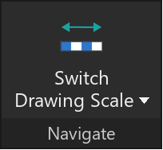
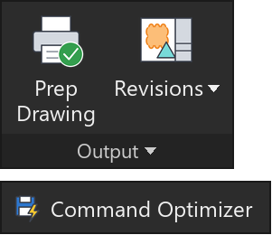
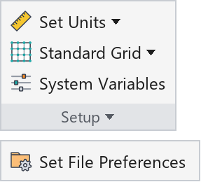
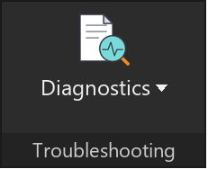

Ribbon
| Requires | AutoCAD for Windows; the drop-downs need AutoCAD 2025 or later |
| Licence | GNU General Public License v3 |
Description
The DynALisp tab of the ribbon has a button for each tool of the Dynalisp module, with an icon of its own, in a panel per group, and the core commands in the DynALisp panel. AutoCAD loads it with DynALisp: there is nothing to set up. It is in the language of the AutoCAD installed: in a French AutoCAD, its panels, buttons, tooltips and drop-downs are in French (AutoCAD 2025 and later; English in an older version), whatever the Language of Dyl-Settings, which is the language of the docs only. The pictures below are the English tab.
How To Use
- Click the DynALisp tab of the ribbon: a panel per group of tools.
- Click a button to run its tool; the arrow of a button lists its presets, and the button then runs the one picked last.
- The tools used less often are in the slide-out of their panel (the arrow beside its title).
Panels
The whole tab, then each panel with its slide-out open under its title. The drop-downs show sample values.

Draw

Quick Draw, Quick Shape, Quick Draw Manager, Materials, Hatch Presets, Shrinkwrap.
Drawing Behaviors

Layer Phase and its Auto-phase and Phase drop-downs, Object Layer Keys, Draw Order.
Layer Transfer

Transfer and its Level, From and To drop-downs, Manager.
Layer Tools

Layer Keys, Make Layers, Import Layers From CSV, Layer Filters, Layer Groups, Import Layer Filters. In the slide-out: Layer Drawing List, Export Layers To CSV, Layer Pen Colors, Layer Color Weight.
Text

Text Prefix Suffix, Quick Add Prefix / Suffix, Claude Text Fix. In the slide-out: Dictionary, Multileader and Block List.
Cleaning

Color ByLayer, Data Links, Fix Blocks ByBlock.
Navigate

Output

Prep Drawing, Revisions. In the slide-out: Command Optimizer.
Setup

Set Units, Standard Grid, System Variables. In the slide-out: Set File Preferences.
Utilities

Quick Select Similar, Group Cluster, Ungroup Nested, Line To Polyline, Layer Color To Object, Reset Linetype Scale. In the slide-out: Viewport To Paper Space, Batch Insert, Count By Layers, Rebuild Patterns, Open Folder.
Troubleshooting

DynALisp

Settings, Suite, User Files, Info, Docs. In the slide-out: Reload.
Buttons
- The arrow of a button lists the presets of its tool (the phases, the drawing scales, the units...), its main command first. The button then runs the item picked last, as the Circle button of AutoCAD.
- The arrow of the Quick Draw button lists All and the groups of the presets: the gallery opens on the group picked.
- The tools used less often are in the slide-out of their panel: the arrow beside its title.
- A button whose tool works on the objects selected (Transfer) keeps the selection; the other buttons cancel the command running first.
- Hover over a button to see its description.
Drop-downs
Two panels have drop-downs that show what the drawing is set to, as the Layer drop-down of AutoCAD:
- Drawing Behaviors – auto-phase and the active phase of the current drawing (see Layer Phase). Picking an item sets it.
- Layer Transfer – the Level, From and To of the transfer (see Layer Transfer). Their lists follow the layers of the drawing. Picking a value only chooses it: the Transfer button runs it. The choices are kept for the session.
They always show the current state, whatever changed it (an alias, a window, another drawing made current).
Notes
- The drop-downs and the translation of the tab are done by Resources\DynALisp.Ribbon.dll, which needs AutoCAD 2025 or later. In an older version, the tab is in English and has its buttons only: the Layer Phase button opens its window, and the Transfer button asks for the level and the values.
- A tool turned off in Dyl-Suite answers Unknown command when its button is clicked.
- The drop-downs change only while AutoCAD is idle, with no command running: after a command, they may take a moment to show the new state.
- A problem of the drop-downs prints a line starting with DynALisp ribbon: at the command line.